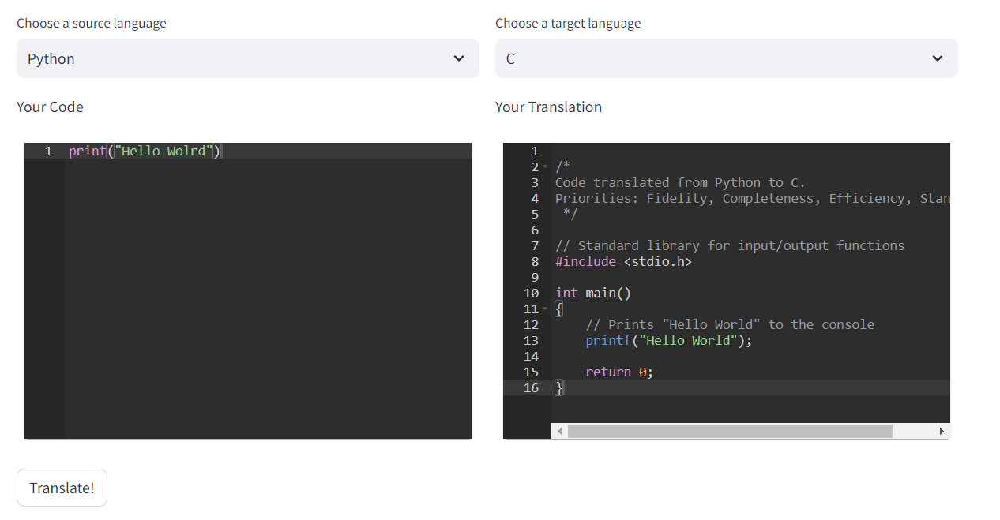

Code Migration App (Streamlit)
This project features a Streamlit-Application, dedicated to utilizing Large Language Models (LLMs)
for the translation of code between different programming languages. The primary aim is to assist developers in legacy code migration,
including translating and optimizing SQL queries during cloud migrations, such as from Oracle to Snowflake.
Additionally, it offers the capability to translate high-level code, such as Python, into lower-level languages like C++ or C for performance optimization.
Our application features dynamically integrated code-editing windows that highlight syntax based on the selected language, ensuring
a seamless and user-friendly experience. The core functionality of the app is built on the OpenAI API, featuring ChatGPT.
 The very simplistic example on the left demonstrates the app's functionality. The user can select the source and target language, enter code in the source language, and then translate it to the target language. The app then displays the translated code in the right-hand window. The current state of the prompt engineering is such that complex code can get translated, but we acknowledge that ensuring absolute functional and output parity pre- and post-translation is not yet guaranteed
This is where the new features of common LLMs allowing code execution are invaluable. Leveraging these capabilities, we can iteratively refine prompts until the output is identical, ensuring the code functions as intended. By partitioning the code and deploying multiple LLMs in a majority-vote configuration, we believe the translation accuracy can be significantly enhanced.